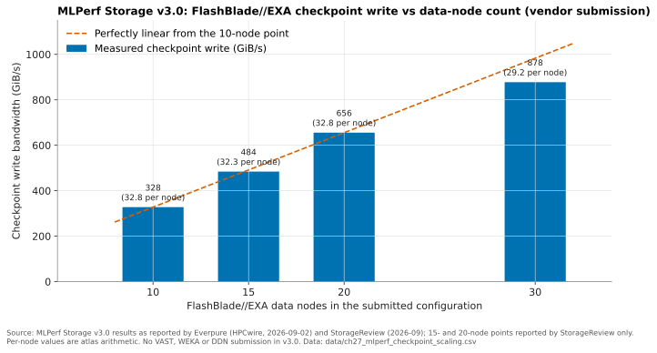

27. Product portfolio: FlashArray and FlashBlade¶
Depth: L2 · Reading time: ~11 min · Last verified: 2026-11-01 Prerequisites: Core technology: Purity and DirectFlash · Scale-up dual-controller arrays · Scale-out shared-nothing clusters · Disaggregated shared-everything
TL;DR¶
- Two product families, two operating systems, one media strategy. FlashArray runs Purity//FA on a dual-controller, scale-up design and serves block storage first (file and S3 were added later). FlashBlade runs Purity//FB on scale-out blades for file and object. Almost every model uses Everpure's own DirectFlash Modules (DFMs). The exceptions are FlashArray//ST and the FlashBlade//EXA data nodes.
- Models differ mainly in media and controller size. //XL, //X and //ST are TLC performance tiers. //C and //E are QLC capacity tiers. FlashBlade//S is the performance tier and FlashBlade//E the capacity tier. "R-numbers" (R4, R5) are controller refreshes that customers can apply in place.
- FlashBlade//EXA is the AI-scale outlier. A Purity//FB metadata core sits on DFM blades, and separate third-party Linux/NVMe data nodes hold the data. Clients use pNFS to fetch a file's layout from the metadata core, then move data directly to and from the data nodes. Chapter 16 explains why this is a metadata/data split rather than DASE.
- EXA posted the top numbers in MLPerf Storage v3.0 (September 2026), with 877.5 GiB/s of checkpoint write and 1,623.4 GiB/s of KV-cache read. VAST, WEKA, DDN, Dell, IBM and NetApp did not submit to that round, so "#1" means first among the systems that entered.
- The AI certification gap has narrowed but not closed. FlashBlade//S holds DGX SuperPOD and NCP high-performance-storage certification. For EXA, Everpure announced in March 2026 that it was extending NVIDIA-Certified Storage validation to the platform as a step toward the NCP level; no completed EXA certification had been published by November 2026.
Why this matters for Everpure strategy¶
The portfolio is the revenue engine: product revenue grew 54% year on year in Q2 FY27, to US$687 million1, and the mix within that growth shows where the business is heading. Each FlashArray tier meets a different incumbent, each FlashBlade tier a different challenger. EXA is the entry ticket to the GPU-cluster deals that VAST, WEKA and DDN have been winning (Chapter 41).
Placing a model against a workload is the minimum for credible PM conversations; knowing what the benchmarks actually measured is the minimum for the Office of the CTO. The technology underneath is in Chapter 26, the software layer on top in Chapter 28.
Core concepts¶
The lineage in one picture¶
Pure Storage launched FlashArray in May 20122. For its first five years it had one product line built on SAS SSDs. Two changes reshaped it. The first was DirectFlash: FlashArray//X (April 2017) talked NVMe directly to raw NAND on Pure's own modules3. The second was media tiering: QLC-based //C arrived in September 20194 so that one controller design could serve both performance and capacity. FlashBlade began as a separate scale-out file and object system. It was unveiled in 2016 and generally available in January 20175. It later forked the same way: //S for performance (June 2022)6 and //E for capacity (March 2023)7.
flowchart LR
subgraph FA["FlashArray - Purity//FA, dual controller, block first"]
A1["FA-300 series 2012"] --> A2["FlashArray//m 2015"]
A2 --> A3["//X all-NVMe DirectFlash 2017"]
A3 --> A4["//C QLC 2019"]
A3 --> A5["//XL 2021"]
A4 --> A6["//E QLC disk-replacement 2023"]
A3 --> A7["//X and //C R4 2023"]
A5 --> A8["//XL R5 2025"]
A7 --> A9["//X and //C R5 Sep 2025"]
A8 --> A10["//XL190 with Purity Turbo GA Jan 2026"]
A3 -.-> A11["//ST commercial SSDs Jun 2025"]
end
subgraph FB["FlashBlade - Purity//FB, scale-out file and object"]
B1["FlashBlade 2016 to 2017 GA"] --> B2["FlashBlade//S 2022"]
B2 --> B3["FlashBlade//E 2023"]
B2 --> B4["//S R2 2025"]
B2 --> B5["FlashBlade//EXA announced Mar 2025"]
endFigure 27.1 — Both families now span performance and capacity tiers on shared software; media by model is in Table 27.1. //ST (dotted) is the only FlashArray that leaves DirectFlash, and EXA is the only FlashBlade that adds third-party hardware.
Sources for the nodes: FA-300 and //m8; //XL9; //E, //X R4 and //C R410; //XL R5, //ST and //S R211; //X R5 and //C R512; //XL19013; EXA14.
Semiconductor bridge. Read the R-numbers as die shrinks on a stable instruction set. Purity is the ISA. A new controller generation (newer Intel Xeon, more PCIe lanes) is a new stepping. Because Evergreen subscriptions swap controllers in place without moving data (Chapter 23), a 2019 //X customer can be running R5 controllers today.
FlashArray: one controller design, five media personalities¶
Every FlashArray is a two-controller, scale-up system (Chapter 14). The models differ in three things: controller horsepower, media and which data services stay switched on.
- //X and //C share controllers. In the R5 refresh (September 2025) both moved to Intel Emerald Rapids. Pure reported //X about 30% faster and //C about 40% faster than R4. The default 3RU chassis grew to 28 drive slots12. //X uses TLC DFMs for sub-millisecond tier-1 work. //C uses QLC for capacity at millisecond-class latency.
- //XL is the big-controller variant. It launched in December 2021 at up to 5.78 PB effective, with NVRAM moved onto the flash modules9. The R5 datasheet cites up to 7.4 PB effective and 45 GB/s, a large-block (512 KB) read figure15. The XL190, GA in January 2026, adds Purity Turbo, which lets the secondary controller serve reads13. That is a notable change for an active/passive-style design (Chapter 14).
- //E is the disk-replacement tier. It launched in June 2023 with 75 TB QLC DFMs and an entry size of about 1 PB10.
- //ST is the deliberate exception. It uses commercial PCIe SSDs, not DFMs. It is block-only. It turns off deduplication, compression and synchronous replication to shorten the I/O path. Everpure claims more than 10 million IOPS per 5RU16.
Worked example: what //ST's design choice costs. Take 400 TB of logical database data that reduces 4:1 on a normal FlashArray. A //X stores it on about 100 TB of physical flash. //ST does not reduce data, so it needs the full 400 TB, roughly four times the NAND. With NAND prices up sharply in 2026 (Chapter 48), //ST makes sense only for data that barely reduces anyway (encrypted or compressed tablespaces near 1:1) or where each microsecond has a dollar value (trading, large OLTP, log writes).
| Model | Target workloads | Media | Performance / capacity tier | Competitor it most often meets |
|---|---|---|---|---|
| FlashArray//XL (R5, XL190) | Consolidated tier-0/1 databases, large virtualisation estates | TLC DFMs, NVRAM on modules | Top of scale-up block; up to 7.4 PB effective (R5) | Dell PowerMax, Hitachi VSP, NetApp high-end AFF/ASA |
| FlashArray//X (R5) | Mainstream tier-1 block and file: VMs, databases, VDI | TLC DFMs | Sub-ms performance, midrange to upper midrange | Dell PowerStore, NetApp AFF/ASA, HPE Alletra MP |
| FlashArray//ST | In-memory DBs, large OLTP, logging | Commercial PCIe SSDs, no data reduction | Latency and IOPS-density specialist | Server-local NVMe; high-end PowerMax/VSP |
| FlashArray//C (R5) | Tier-2 consolidation, dev/test, VM capacity, backup | QLC DFMs | Capacity block/file, ms-class latency | NetApp AFF C-Series, Dell PowerStore, hybrid arrays |
| FlashArray//E | Disk replacement, backup and secondary copies | QLC DFMs (75 TB and up) | Lowest $/TB FlashArray, about 1 PB entry | Hybrid and HDD arrays |
| FlashBlade//S (S100/S200/S500 R2) | Analytics, EDA, rapid restore, AI training and inference on SuperPOD | QLC DFMs | Scale-out file and object performance tier | Dell PowerScale, NetApp ONTAP NAS, VAST |
| FlashBlade//E | Data lakes, archives, backup repositories | QLC DFMs; storage-only chassis behind a control chassis | Capacity file and object | Dell PowerScale archive tiers, HDD object (Cloudian, Scality), Qumulo |
| FlashBlade//EXA | GPU clusters, neoclouds, HPC: checkpoints, training reads, KV cache | DFM metadata blades plus third-party NVMe data nodes | Multi-TB/s single namespace | VAST, WEKA, DDN EXAScaler, IBM Storage Scale |
Table 27.1 — Positioning by workload. Competitor pairings are the atlas's judgement from public positioning, not Everpure win/loss data. Specs: 15161013717.
FlashBlade//S and //E: scale-out with a capacity fork¶
FlashBlade//S separates per-blade compute from DirectFlash capacity inside a 5U chassis. This lets customers add blades for performance or larger DFMs for capacity6. Partner listings for the R2 generation cite up to 1,200 TB per blade with 300 TB DFMs and 400GbE networking13 [VERIFY: per-blade figure is a partner claim]. FlashBlade//E keeps CPUs only in a control chassis and adds storage-only chassis behind it. That design lowers $/TB for cold unstructured data7. Purity DeepReduce reached //E in early 202613. In September 2026 Everpure made it always-on, with a median 2:1 global reduction expected on //E and //S200 R218.
In AI, FlashBlade//S is the workhorse. FlashBlade//S500 earned DGX SuperPOD certification over Ethernet in November 202419. In March 2025 FlashBlade earned NVIDIA-Certified Storage at the Foundation and Enterprise levels, plus NCP high-performance-storage certification for HGX B200/H200 reference architectures20. Everpure says the //S R2 platform is certified for GB200 and GB300 SuperPODs21 [VERIFY: search-summary only].
FlashBlade//EXA: metadata core plus data nodes¶
EXA was announced on March 11, 2025, for AI and HPC at a scale beyond what a FlashBlade//S cluster reaches14, and declared generally available at Accelerate in June 202522. The design starts from a diagnosis: at thousands of GPUs, the bottleneck is metadata and coordination, not raw media bandwidth (Chapter 21). EXA therefore splits the system into two independently scaled tiers1722:
flowchart LR
subgraph CL["GPU servers - pNFS clients"]
C1["Client 1"]
C2["Client N"]
end
subgraph MD["Metadata core - Purity//FB"]
M1["EXA blades with DFMs"]
M2["Namespace, layouts, locks"]
end
subgraph DN["Data nodes - Purity//DN"]
D1["Linux server + NVMe SSDs"]
D2["Linux server + NVMe SSDs"]
D3["Planned: DFM-based nodes"]
end
C1 -->|"NFSv4.1 over TCP: open, LAYOUTGET"| M1
C2 -->|"metadata ops"| M1
C1 ==>|"data over RDMA, direct"| D1
C2 ==>|"data over RDMA, direct"| D2
M1 -.->|"health and capacity control"| D1
M1 -.-> D2
M1 -.-> D3Figure 27.2 — Clients go to the metadata core only for the map. Bulk data travels straight between GPU servers and data nodes, so throughput scales with data-node count while metadata scales with blades.
- The metadata core is FlashBlade hardware running Purity//FB. It holds the namespace, file layouts and locks on DFM blades. Pure Storage's launch materials described one to ten chassis of ten blades each17.
- Data nodes at launch were off-the-shelf Linux servers with NVMe SSDs, running Everpure's Purity//DN stack1723. Under the EXA terms of use, a data node is a third-party server paired with the metadata core. Each node comes with a 160 TiB usable-capacity entitlement, and larger capacity is licensed per TB24. The SPECstorage submission used Supermicro ASG-1115S-NE316R servers as data nodes23.
- DFM-based data nodes, with 75 TB and 150 TB modules and up to 24 per server, were planned for 2H 202525. No public source found confirms they are GA as of November 2026: the terms of use still describe third-party servers24, and the September 2026 MLPerf submission used Linux/NVMe data nodes26 [VERIFY: DFM data-node GA status].
sequenceDiagram
participant G as GPU server
participant M as Metadata core
participant D as Data nodes
G->>M: OPEN file and LAYOUTGET over TCP
M-->>G: layout listing which data nodes hold which stripes
G->>D: parallel RDMA reads to many data nodes
D-->>G: data, with no metadata hop
G->>M: LAYOUTRETURN or CLOSEFigure 27.3 — The pNFS read path: one metadata round trip, then many parallel direct transfers. This is the parallel-file-system pattern of Chapter 17 with Purity as the metadata server.
Clients speak standard pNFS. Metadata travels as NFSv4.1 over TCP, and data moves over RDMA27. No proprietary client driver is needed, which helps in locked-down GPU images. That is a fair point against WEKA and Lustre, whose clients buy finer client-side control in exchange; VAST makes the same standard-client argument with NFS over RDMA. Two consequences matter for the portfolio. First, EXA's data-node hardware is customer-sourceable, which helps neoclouds with server supply deals. Second, EXA's data services, including protection, reduction and multi-tenancy, mature on a separate release train (Purity//DN) from Purity//FB23. Multi-tenancy and QoS for neoclouds arrived at Accelerate 2026 in June28.
What the benchmarks actually measured¶
MLPerf Storage emulates accelerators in software. A run passes if the storage keeps every simulated GPU above a utilisation threshold. No real GPUs are involved (Chapter 37)29. Round v3.0, published September 1, 2026, moved the simulated accelerator from H100 to B200. It also added KV-cache and vector-database workloads30. Everpure was one of 11 first-time submitters30; DDN, Dell, Huawei, IBM, NetApp, VAST and WEKA were absent31. Earlier "v2.0 results" from Pure Storage were a white paper, not an MLCommons-listed entry32 [VERIFY: whether any v2.0 result was officially submitted].

Figure 27.4 — Checkpoint write scales nearly linearly with data nodes, but at 30 nodes per-node throughput is about 11% below the 10-node rate.
Data: data/ch27_mlperf_checkpoint_scaling.csv
Worked check on the headline. Everpure reported 877.52 GiB/s for 17.74 seconds on the largest checkpoint model33. That is 877.52 × 17.74 ≈ 15,570 GiB, or about 16.7 TB. That fits the round's 1.25-trillion-parameter checkpoint at about 13 bytes per parameter for weights plus optimizer state (Chapter 31). Scaling efficiency is (877.52 ÷ 30) ÷ (327.65 ÷ 10) = 29.25 ÷ 32.77 ≈ 89%. In converted units, 877.52 GiB/s × 1.074 ≈ 942 GB/s. A cluster checkpointing every 30 minutes would stall for about 17.74 ÷ 1,800 ≈ 1% of wall-clock time, before any asynchronous checkpointing.
| Claim | Benchmark | Date | Configuration | Caveat |
|---|---|---|---|---|
| 877.5 GiB/s checkpoint write, top of round | MLPerf Storage v3.0, checkpointing | 2026-09-01 | 30 EXA blades (120 DFMs, metadata) + 30 Linux/NVMe data nodes, ~866 TB usable26 | VAST, WEKA, DDN absent. Data nodes are not DFMs. Reported read figure conflicts (588.3 vs 833.0 GiB/s)2633 |
| Near-linear scaling, 327.6 → 877.5 GiB/s | Same | 2026-09-01 | 10 → 30 data nodes | Per-node rate down ~11%. 15- and 20-node points from one secondary source |
| 1,623.4 GiB/s KV-cache read | MLPerf Storage v3.0, KV cache | 2026-09-01 | 51-host EXA configuration26 | First round of a new workload. Next results ~443 GiB/s (UBIX, FarmGPU). Host vs node counts unclear |
| 85,736 tokens/s (Llama 3.1 8B), 33,403 (70B), storage-only | MLPerf Storage v3.0, KV cache | 2026-09-01 | Not stated in coverage34 | Tokens a storage system can feed, not a GPU serving rate. "#1 on every test entered" is Everpure's framing |
| 6,300 AI_Jobs at 0.97 ms, #1 | SPECstorage Solution 2020 AI_IMAGE | Tested Jan 2026, published 2026-02-17 | 30 S500R1-EXA blades, 60 data nodes, 80 hosts23 | Displaced HPE/WEKA (5,000)35. Image-training proxy with few submitters |
| >10 TB/s read, single namespace | Everpure preliminary testing | 2025-03-11 | Not disclosed36 | Vendor test, unaudited |
| >5 TB/s read with 60 data nodes | Everpure technical brief | 2025 | 60 data nodes37 | Vendor test. ≥83 GB/s per node |
| Up to 20× faster time to first token (PureKVA) | Everpure internal | 2026-09-30 | Not published18 | "Up to"; baseline presumably recompute |
Table 27.2 — Benchmark claims for FlashBlade//EXA. The peer-reviewed results are strong, but they come from rounds the main AI-native rivals skipped, on third-party data nodes.
How Everpure approaches it vs. competitors¶
Everpure's portfolio argument is one software lineage per family, own media everywhere, upgrade in place. Rivals beat it in specific places:
| Line | Everpure's best argument | Where a rival genuinely wins | Rival |
|---|---|---|---|
| FlashArray//XL | In-place controller upgrades, high reduction, operational simplicity | Mainframe (FICON) attachment and decades of multi-site replication practice; FlashArray has no mainframe answer | Dell PowerMax, Hitachi VSP, IBM DS8000 |
| FlashArray//X, //C | DFM density, shared controllers, block + file + S3 on one OS | NAS depth and installed base (ONTAP replication, caching, multiprotocol); FlashArray file services are younger | NetApp |
| FlashArray//ST | Microsecond-class latency with array-grade availability | Server-local NVMe with database-native replication beats any networked array on latency and cost for one application | DIY / HCI |
| //E and FlashBlade//E | Power, footprint and flash reliability for "cold" data | Raw $/TB. QLC was roughly 15× HDD per GB in 2026 per TrendForce38 [VERIFY: single-vendor-derived index] | HDD object and hybrid arrays |
| FlashBlade//S | SuperPOD-certified scale-out file/object with Evergreen | PowerScale's installed base and mixed flash/HDD tiers in one cluster; VAST's global similarity reduction and database features | Dell, VAST |
| FlashBlade//EXA | Purity metadata engine, standard pNFS client, customer-sourced data nodes, top v3.0 results | NVIDIA flagship references (DDN's ~4 TB/s on Eos)39; WEKA's software-anywhere and cloud reach; VAST's neocloud scale (US$1.17B CoreWeave deal, reported by press)40; SuperPOD certification held by all three | VAST, WEKA, DDN |
Table 27.3 — Steelman by product line. FlashArray's exposures are breadth (mainframe, NAS heritage). FlashBlade//EXA's are references and certification maturity.
Everpure is strongest where one OS stretches across tiers (FlashArray from //ST to //E) and most exposed where buyers want an ecosystem badge or a reference customer first: at EXA scale, "who runs this on 10,000 GPUs?" comes before speed. Options a strategy team might evaluate, based on public information: whether DFM data nodes (closing the media-cost gap) or NCP/SuperPOD certification for EXA (closing the badge gap) matters more to neocloud win rates, and whether //ST and //E justify their SKU complexity or should fold into //X and //C over time.
History and trajectory¶
The portfolio grew by forking, not acquiring (Figure 27.1), and the forks track the NAND roadmap: QLC density made //C and //E viable, and the 75 → 150 → 300 TB DFM progression (Chapter 26) lets the capacity tiers compete with disk.
Signals for 2026–2027: in March 2026 Everpure said it was extending NVIDIA-Certified Storage validation to EXA, a step toward the NCP level that Blocks & Files reported for "later this year"41, and aligned EXA with NVIDIA's BlueField-4 STX reference architecture42. Neither an EXA entry on NVIDIA's certified-storage list nor an NCP certification had been found by 2026-11-01. PureKVA and always-on DeepReduce were announced on 30 September 202618. The first enterprise EXA customer was reported in Q4 FY2643. Watch for three things: DFM data-node GA, NCP and SuperPOD badges for EXA, and an MLPerf v4.0 round that VAST, WEKA or DDN actually enter.
Numbers that matter¶
| Metric | Value | Context | Source / date |
|---|---|---|---|
| FlashArray launch | May 2012 | First product, with "All Software Included" licensing | S-1, 20152 |
| FlashArray//XL R5 | Up to 7.4 PB effective; 45 GB/s (512 KB read) | Top scale-up block | Datasheet15 |
| FlashArray//ST | >10 M IOPS per 5RU | No dedupe or compression | Everpure, 202516 |
| EXA checkpoint write | 877.52 GiB/s (≈942 GB/s) | 30 data nodes, MLPerf v3.0 | 2026-0933 |
| EXA scaling efficiency, 10 → 30 nodes | ≈89% | 29.25 vs 32.77 GiB/s per node | Worked example |
| EXA KV-cache read | 1,623.4 GiB/s | 51-host configuration | 2026-0926 |
| SPECstorage AI_IMAGE | 6,300 AI_Jobs, 0.97 ms | 60 data nodes | SPEC, 2026-0223 |
| EXA data-node capacity entitlement | 160 TiB usable per node | Beyond that, licensed per TB | Terms of use24 |
| Product revenue, Q2 FY27 | US$687M (+54%) | Total revenue US$1.19B | Everpure, 2026-08-261 |
Conversation playbook¶
Questions for a PM
- "Where does //ST win deals that //XL190 with Purity Turbo would lose, and how big is that pool?" Strong: separates latency-bound from IOPS-bound buyers, gives the reduction ratio at which //ST's lack of reduction stops mattering, and admits overlap with //XL.
- "What share of EXA pipeline needs DFM data nodes or NCP certification before signing?" Strong: splits enterprise from neocloud buyers, with the gating requirement and a date for each.
- "Which competitor shows up most against FlashBlade//E, and on what metric do we lose?" Strong: HDD-based object on $/TB, plus the power, rack and refresh numbers that flip TCO at a stated capacity and term.
Questions for an engineer
- "In the 30-node MLPerf run, what limited per-node throughput: data-node NICs, SSDs or metadata?" Strong: names the bottleneck, says what changes with DFM nodes, and explains the read-figure discrepancy.
- "How are data nodes protected today, and what does a data-node loss during a checkpoint look like to the client?" Strong: names the protection scheme, the degraded-mode throughput and the rebuild time.
- "What does Purity Turbo change in controller cache coherence when the secondary serves reads?" Strong: explains how the two caches stay consistent, how failover behaves, and why this is XL190-only.
Don't say this:
- "EXA beat VAST and WEKA in MLPerf." They did not submit to v3.0.
- "Every Everpure product runs on DirectFlash." //ST and EXA data nodes use commercial SSDs.
- "FlashBlade//EXA is SuperPOD-certified." The public record shows //S, not EXA, as of this writing.
- "R5 is a new product." It is a controller refresh that Evergreen customers can apply in place.
- "877 GiB/s means 877 GB/s." GiB is about 7% larger, so the figure is ≈942 GB/s.
Going deeper (optional, L3 pointers)¶
- The MLCommons v3.0 results tables and Everpure's submission system description (closed division, per-workload configurations).
- The SPECstorage Solution 2020 full disclosure for the EXA result (Purity//FB 4.6.4, Purity//DN 1.0, network topology).
- RFC 8881 (NFSv4.1) on pNFS layouts, and RFC 8435 (Flex Files), for the client path in Figure 27.3.
Key terms¶
- R-generation — a FlashArray controller refresh (for example R5) applied in place.
- Purity Turbo — XL190 feature letting the secondary controller serve reads.
- Metadata core / data node — EXA's Purity//FB blade tier and its Purity//DN Linux data servers.
- pNFS layout — the map a metadata server returns so clients can read data servers directly.
- MLPerf Storage checkpointing / KV-cache workloads — emulated tests of checkpoint bandwidth and inference-context reads.
- See the glossary for the rest.
Sources¶
-
Everpure, "Everpure Announces Second Quarter Fiscal 2027 Financial Results," 2026-08-26. https://investor.everpuredata.com/news-and-events/press-releases/press-release-details/2026/Everpure-Announces-Second-Quarter-Fiscal-2027-Financial-Results/default.aspx (retrieved 2026-11-01). ↩↩
-
SEC, "Pure Storage, Inc. Form S-1," 2015-08-27. https://www.sec.gov/Archives/edgar/data/0001474432/000119312515287576/d895532ds1.htm (retrieved 2026-11-01). ↩↩
-
Pure Storage, "Pure Storage Announces First Enterprise-Class All-NVMe Flash Array, FlashArray//X," 2017-04-11. https://investor.everpuredata.com/news-and-events/press-releases/press-release-details/2017/Pure-Storage-Announces-First-Enterprise-Class-All-NVMe-Flash-Array-FlashArrayX/default.aspx (retrieved 2026-11-01). ↩
-
Blocks & Files, "Pure Storage speeds, enlarges and extends systems, embraces subscriptions and heads for the clouds," 2019-09-17. https://blocksandfiles.com/2019/09/17/pure-storage-accelerate-launches/ (retrieved 2026-11-01). ↩
-
GeekFluent, "Pure Storage's FlashBlade is now GA," 2017-01-25. https://geekfluent.com/2017/01/25/pure-storages-flashblade-is-now-ga/ (retrieved 2026-11-01). ↩
-
Blocks & Files, "Pure extends FlashBlade with more capacity and faster compute," 2022-06-08. https://blocksandfiles.com/2022/06/08/pure-extends-flashblade-with-more-capacity-and-faster-compute/ (retrieved 2026-11-01). ↩↩
-
StorageNewsletter, "Pure Storage Ushers in New Era of Unstructured Storage with FlashBlade//E," 2023-03-02. https://www.storagenewsletter.com/2023/03/02/pure-storage-ushers-in-new-era-of-unstructured-storage-with-flashblade-e/ (retrieved 2026-11-01). ↩↩↩
-
ChannelBuzz, "Pure Storage moves into hardware with its next-gen FlashArray," 2015-06. https://channelbuzz.ca/2015/06/pure-storage-moves-into-hardware-with-its-next-gen-flasharray-13569/ (retrieved 2026-11-01). ↩
-
Pure Storage via Nasdaq, "Pure Storage Introduces New Top-End FlashArray Model Bringing Power and Scale with Unparalleled Simplicity to the Enterprise," 2021-12-08. https://www.nasdaq.com/press-release/pure-storage-introduces-new-top-end-flasharray-model-bringing-power-and-scale-with (retrieved 2026-11-01). ↩↩
-
Pure Storage, "Pure Storage Expands Pure//E Family, Enabling Customers to Choose Flash For Any Workload," 2023-06. https://investor.everpuredata.com/news-and-events/press-releases/press-release-details/2023/Pure-Storage-Expands-PureE-Family-Enabling-Customers-to-Choose-Flash-For-Any-Workload/default.aspx (retrieved 2026-11-01); StorageReview, "Pure Storage adds 75TB flash module, FlashArray//E and new FlashArray//X, //C R4 nodes," 2023. https://www.storagereview.com/news/pure-storage-adds-75tb-flash-module-flasharray-e-and-new-flasharray-x-c-r4-nodes (retrieved 2026-11-01). ↩↩↩
-
Techzine, "Pure surprises: FlashArray gets S3 support, FlashArray//ST without DFMs," 2025-06. https://www.techzine.eu/blogs/infrastructure/132388/pure-surprises-flasharray-gets-s3-support-flasharray-st-without-dfms/ (retrieved 2026-11-01). ↩
-
Blocks & Files, "Pure Enterprise Data Cloud updates," 2025-09-26. https://blocksandfiles.com/2025/09/26/pure-enterprise-data-cloud-updates/ (retrieved 2026-11-01). ↩↩
-
Everpure, "Pure Launch Blog: January 2026 Edition," 2026-01. https://blog.everpuredata.com/products/pure-launch-blog-january-2026-edition/ (retrieved 2026-11-01). ↩↩↩↩↩
-
SiliconANGLE, "FlashBlade//EXA: Pure Storage helps enterprises avoid starving data-hungry GPUs," 2025-03-11. https://siliconangle.com/2025/03/11/flashblade-exa-pure-storage-helps-enterprises-avoid-starving-data-hungry-gpus-accelerate-ai-workloads/ (retrieved 2026-11-01). ↩↩
-
Pure Storage, "FlashArray//XL datasheet," n.d. (R5 edition). https://www.purestorage.com/content/dam/pdf/en/datasheets/ds-flasharray-xl.pdf (retrieved 2026-11-01). ↩↩↩
-
Pure Storage, "FlashArray//ST" product page and datasheet, 2025. https://www.purestorage.com/products/unified-block-file-storage/flasharray-st.html (retrieved 2026-11-01); Pure Storage via Nasdaq, "Pure Storage Unveils Next-Generation Storage Products to Deliver Performance at Any Scale," 2025-06. https://www.nasdaq.com/press-release/pure-storage-unveils-next-generation-storage-products-deliver-performance-any-scale (retrieved 2026-11-01). ↩↩↩
-
Architecting IT, "FlashBlade//EXA analysis," 2025-03. https://www.architecting.it/?p=7294 (retrieved 2026-11-01); Pure Storage, "FlashBlade//EXA for AI" (solution brief), 2025. https://www.purestorage.com/content/dam/pdf/en/solution-briefs/sb-flashblade-exa-ai.pdf (retrieved 2026-11-01). ↩↩↩↩
-
Blocks & Files, "Everpure bulks up AI offer," 2026-09-30. https://blocksandfiles.com/flash/2026/09/30/everpure-bulks-up-ai-offer/5300162 (retrieved 2026-11-01). ↩↩↩
-
Blocks & Files, "Pure Storage's FlashBlade//S500 gains Nvidia SuperPOD certification," 2024-11-18. https://www.blocksandfiles.com/ai-ml/2024/11/18/pure-storages-flashblade/s500-gains-nvidia-superpod-certification/1598641 (retrieved 2026-11-01). ↩
-
Blocks & Files, "Pure Storage expands AI capabilities with Nvidia certification," 2025-03-19. https://www.blocksandfiles.com/ai-ml/2025/03/19/pure-storage-expands-ai-capabilities-with-nvidia-certification/1595136 (retrieved 2026-11-01). ↩
-
Everpure blog, "Pure Storage NVIDIA certification for DGX GB200 and GB300 SuperPODs," n.d. https://blog.everpuredata.com/purely-technical/pure-storage-nvidia-certification-dgx-gb200-gb300-superpods/ (retrieved 2026-11-01). ↩
-
TechRepublic, "Pure Storage is 'Reinventing Storage for AI'" (Accelerate 2025 keynote, FlashBlade//EXA general availability), 2025-06-19. https://www.techrepublic.com/article/news-pure-storage-event-keynote-flashblade-exa/ (retrieved via search 2026-11-01). ↩↩
-
SPEC, "SPECstorage Solution 2020_ai_image Result: Pure Storage FlashBlade//EXA (storage2020-20260130-00145)," published 2026-02-17. https://www.spec.org/storage2020/results/res2026q1/storage2020-20260130-00145.html (retrieved 2026-11-01). ↩↩↩↩↩
-
Everpure, "FlashBlade//EXA Terms of Use," n.d. https://www.everpuredata.com/legal/flashblade-exa-terms-of-use.html (retrieved 2026-11-01). ↩↩↩
-
NAND Research, "Research Note: Pure Storage FlashBlade//EXA," 2025-03. https://nand-research.com/research-note-pure-storage-flashblade-exa/ (retrieved 2026-11-01). ↩
-
StorageReview, "MLPerf Storage v3.0: 877 GiB/s checkpoints, a cloud first and a leaderboard turned over," 2026-09. https://storagereview.com/news/mlperf-storage-v3-0-877-gib-s-checkpoints-a-cloud-first-and-a-leaderboard-turned-over (retrieved 2026-11-01). ↩↩↩↩↩
-
Blocks & Files, "How Pure Storage developed its disaggregated FlashBlade//EXA system," 2025-04-17. https://blocksandfiles.com/2025/04/17/how-pure-storage-developed-its-disaggregated-flashblade-exa-system/ (retrieved 2026-11-01). ↩
-
TechTarget, "7 highlights from Pure Accelerate 2026," 2026-06. https://www.techtarget.com/it-infrastructure/opinion/7-highlights-from-Pure-Accelerate-2026 (retrieved 2026-11-01); Everpure blog, "Meet FlashBlade//EXA: the AI Data Platform for Scale," 2026-06. https://blog.everpuredata.com/products/meet-flashblade-exa-the-ai-data-platform-for-scale/ (retrieved 2026-11-01). ↩
-
HPCwire, "The New MLPerf Storage Benchmark Runs Without ML Accelerators," 2024-10-03. https://www.hpcwire.com/2024/10/03/the-new-mlperf-storage-benchmark-runs-without-ml-accelerators/ (retrieved 2026-11-01). ↩
-
MLCommons via GlobeNewswire, "MLCommons Releases New MLPerf Storage v3.0 Benchmark Results," 2026-09-01. https://www.globenewswire.com/news-release/2026/09/01/3354412/0/en/mlcommons-releases-new-mlperf-storage-v3-0-benchmark-results.html (retrieved 2026-11-01). ↩↩
-
Blocks & Files, "MLPerf Storage benchmark updated for modern AI," 2026-09-01. https://www.blocksandfiles.com/ai-ml/2026/09/01/mlperf-storage-benchmark-updated-for-modern-ai/5293617 (retrieved via search 2026-11-01). ↩
-
Everpure, "FlashBlade//EXA MLPerf Storage v2.0 Test Results" (white paper), n.d. https://www.everpuredata.com/content/dam/pdf/en/white-papers/twp-flashblade-exa-mlperf-storage-v2-0-test-results.pdf (retrieved 2026-11-01). ↩
-
HPCwire (Everpure release), "Everpure Leads MLPerf Storage Tests for Large Model Checkpointing and KV Cache," 2026-09-02. https://hpcwire.com/off-the-wire/everpure-leads-mlperf-storage-tests-for-large-model-checkpointing-and-kv-cache (retrieved 2026-11-01). ↩↩↩
-
Everpure blog, "Everpure FlashBlade//EXA Tops MLPerf Storage v3.0 Checkpointing and KV cache Benchmarks," 2026-09. https://blog.everpuredata.com/purely-technical/everpure-flashblade-exa-tops-mlperf-storage-v3-benchmarks/ (retrieved 2026-11-01). ↩
-
Blocks & Files, "Everpure tops SPECstorage Solution 2020 AI IMAGE benchmark charts," 2026-03-13. https://www.blocksandfiles.com/flash/2026/03/13/everpure-tops-specstorage-solution-2020-ai-image-benchmark-charts/5209245 (retrieved 2026-11-01). ↩
-
StorageReview, "FlashBlade//EXA: Pure Storage's new AI/HPC powerhouse with 10 TB/s performance," 2025-03-11. https://www.storagereview.com/news/flashblade-exa-pure-storages-new-ai-hpc-powerhouse-with-10-tb-s-performance (retrieved 2026-11-01). ↩
-
Everpure, "Technical Brief: FlashBlade//EXA," n.d. (2025). https://www.everpuredata.com/content/dam/pdf/en/technical-briefs/tb-flashblade-exa.pdf (retrieved 2026-11-01). ↩
-
DatacenterDisk, "The SSD/HDD Price Divergence Report 2026," 2026 (citing TrendForce). https://datacenterdisk.com/reports/ssd-hdd-price-divergence-2026 (retrieved 2026-11-01). ↩
-
DDN, "DDN Delivers 4 Terabytes/Second of Accelerated Storage Performance in Groundbreaking NVIDIA Eos AI Supercomputer," 2024-03. https://www.ddn.com/press-releases/ddn-delivers-4-terabytes-second-of-accelerated-storage-performance-in-groundbreaking-nvidia-eos-ai-supercomputer/ (retrieved 2026-11-01). ↩
-
Reuters (via AOL), "Exclusive: Nvidia-backed Vast Data inks $1.17 billion AI deal with CoreWeave," 2025-11-06. https://www.aol.com/articles/exclusive-nvidia-backed-vast-data-120456403.html (retrieved 2026-11-01). ↩
-
Blocks & Files, "Everpure dives deeper into AI," 2026-03-16. https://www.blocksandfiles.com/ai-ml/2026/03/16/everpure-dives-deeper-into-ai/5209351 (retrieved 2026-11-01). ↩
-
StorageReview, "Everpure aligns FlashBlade//EXA with NVIDIA AI Factory architectures, previews Data Stream," 2026-03-16. https://www.storagereview.com/news/everpure-aligns-flashblade-exa-with-nvidia-ai-factory-architectures-previews-data-stream (retrieved 2026-11-01). ↩
-
Futurum, "Everpure Q4 FY 2026 Revenue Passes $1 Billion as Platform Strategy Scales," 2026-02. https://futurumgroup.com/insights/everpure-q4-fy-2026-revenue-passes-1-billion-as-platform-strategy-scales (retrieved 2026-11-01). ↩